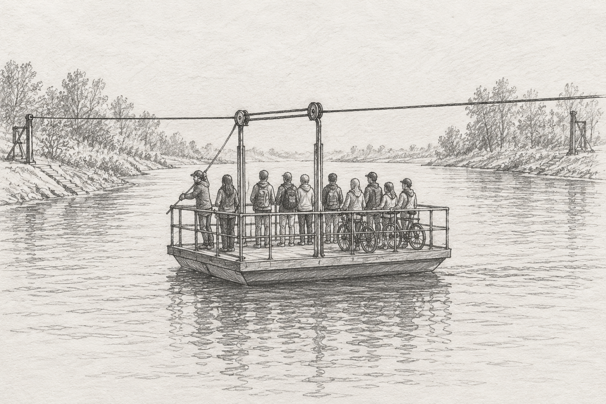

Przeprawa promowa - Wydra!

Nazywamy się Przeprawa promowa - Wydra i łączymy Brzeg Górny z Kępą Łąkową przez rzekę Mętną. Prom jest ręczny,
ciągnięty po linie rozpiętej nad wodą, i płynie się nim około 6 minut.
Mieści 12 osób i 2 rowery. Samochodów nie wozimy, motocykli też nie.
Pływamy od 1 maja do 30 września. Przy wysokiej wodzie prom stoi, a
stan rzeki każdy może sam sprawdzić w serwisie hydrologicznym IMGW
Sposób przeprawy:
- Na trap wchodzi się dopiero wtedy, gdy prom jest przycumowany
- Zaczyna się od dzwonu na słupie przy kładce: trzeba nim zadzwonić dwa razy.
- Potem czeka się, aż przewoźnik podpłynie i przycumuje.
- Po wejściu na prom rower stawia się przy burcie i trzyma za kierownicę, a samemu siada się na ławce.
- Na drugim brzegu wysiada się dopiero na znak przewoźnika.
- Opłatę pobieramy na promie, przed odbiciem od brzegu, czyli po zajęciu miejsc.
Na promie nie wolno:
- Wchodzić z psem bez smyczy
- Stać przy linie
- Skakać do wody
- Wnosić szkła
- Płynąć w wieku do 10 lat bez opieki dorosłego
Słowniczek
- Przewoźnik
- To osoba, która prowadzi prom i odpowiada za pasażerów.
- Trap
- To pomost między brzegiem a promem.
- Lina prowadząca
- To stalowa lina nad rzeką, po której prom przesuwa się z brzegu na brzeg.
- Cumowanie
- To przywiązanie promu do brzegu.
- Kępa
- To wyspa albo kawałek lądu, który przy wysokiej wodzie bywa zalewany; od niej wzięła się nazwa wsi.
Regulamin